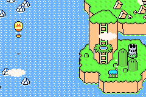
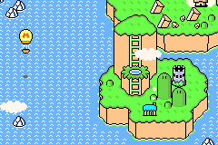

Super Mario Advance 2 - Super Mario World + Mario Brothers (Japan)
EEPROM 64K
Cartridge Identity
- Game Code
AA2J(FamilyAA2)- Header Title
SUPER MARIOB- Maker / Revision
01/ rev0- ROM Size
- 4.0 MiB (4,194,304 B)
- Save Media
EEPROM 64K- SHA-256
331d4e82336af65ab36222da1fbacff276fb804b25ba131c6158d5bbb12b89d4- Engine / SDK Group
comm-001(196 families)
Screenshots


Observed Battery Save Layout
- Fill Byte & Active Size
0x00fill · 416–416 / 8,192 B active (entropy 3.17 bits/B)- Active Offset Ranges
0x0–0x87,0x8A–0x8B,0x8E–0x8F,0x93,0x96–0xC7,0xCA–0xCB,0xCE–0xCF,0xD3, +8 more (124 total)- ASCII Magic / Headers
0JWM2AMS,0JWA- Observed Variable Regions
- 0 bytes across 0 spans: None
- Candidate Checksum/Counter Spans
- None
Hardware MMIO Subsystems
ppu_display0x809aea8
Regional Variants & Revisions (Family AA2)
- Chaoji Maliou Shijie (China) (
AA2C, 4 MiB) - Super Mario Advance 2 - Super Mario World (Europe) (En,Fr,De,Es) (
AA2P, 4 MiB) - Super Mario Advance 2 - Super Mario World (USA, Australia) (
AA2E, 4 MiB)